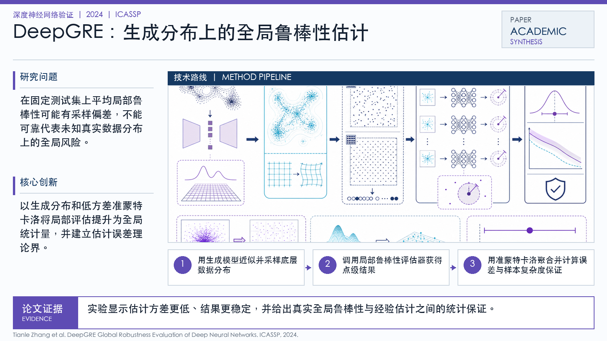

Problem
解决的问题
在固定测试集上平均局部鲁棒性可能有采样偏差，不能可靠代表未知真实数据分布上的全局风险。
Verification on DNNs · 2024 · ICASSP
DeepGRE Global Robustness Evaluation of Deep Neural Networks
Problem
在固定测试集上平均局部鲁棒性可能有采样偏差，不能可靠代表未知真实数据分布上的全局风险。
Value
实验显示估计方差更低、结果更稳定，并给出真实全局鲁棒性与经验估计之间的统计保证。
Paper-grounded Academic Summary
该代表页依据原文摘要、贡献段与方法图注生成。方法视觉由 ImageGen 按论文证据逐篇绘制，中文研究问题、技术路线、创新点与实验结论采用确定性排版，以保证内容与字符准确。
打开原文 PDF
Technical Route
Innovation